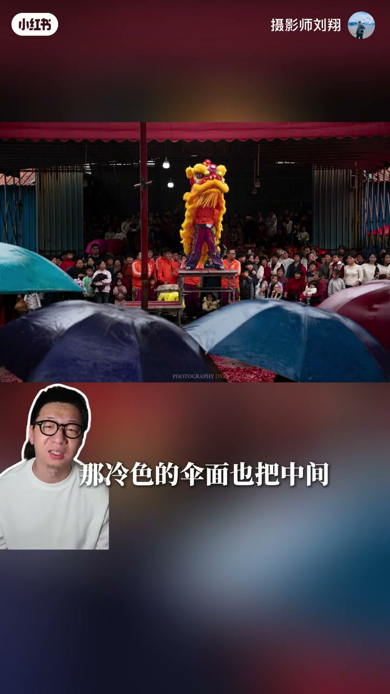
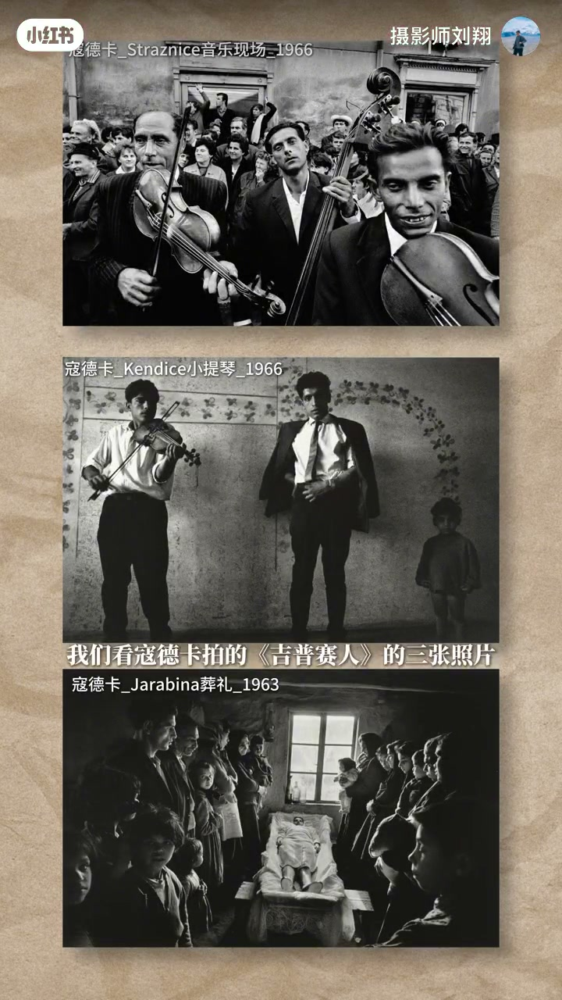

内容要点
知识结构
满分十分他只给三分：成片不难看，但震撼属于活动本身，不会自动变成照片的分量；活动替你完成了视觉刺激，摄影师却容易误认为是自己的发现。
前景雨伞带入天气、观众与距离，冷色伞面把中间黄红狮拖出；可惜发现没推到底——狮头仍端正居中，红柱切割、檐与伞压扁空间，人群退成黑背景，雨伞沦为活动照边框。
音乐现场镜头塞进人群、边缘切断反而压出拥挤；小提琴正面三人与花纹墙的尺度与留白；葬礼观台角端、亮窗与暗墙、前景孩子看向镜头。三张无通用构图，共同点只有：他知道自己为什么站在那儿。
狮头、火星、服装之外：谁撑伞、谁挤门口、孩子看谁、表演者与观众隔多远——这些才把节目变成某一天、某一地真实发生的生活。只追高潮，民俗很快变成全国通用视觉产品。
别在原地等狮子换表情；钻到伞下让伞沿、雨水与人脸站住画面，狮子可只留远处一块黄；想拍武师就离开正中间、靠近身体并放大身后整齐人头。大家都站的位置最容易拍到节目，最难拍到自己的判断。
民俗越震撼，越容易拍出同一张「活动照」；差别不在换狮、换村或换摄影师，而在你是否为自己的站位给出理由。
图文实录
开场打分：震撼属于活动，不属于自动发现
视频以打铁花、舞火龙、舞狮这类「存得特别多」的民俗题材切入。刘翔先抛出打分：满分十分，这张照片他只给三分（Whisper 记作「买分十分」，按语境校正为满分）。前约三十秒多为画面与字幕铺垫，口播从约 00:30 起接上：你的成片并不难看，但那份震撼属于这个活动——它不会自动变成照片的分量。
这是全片的总命题：民俗现场越刺激，摄影师越容易躺在现场红利上，把「拍到了节目」当成「拍出了判断」。
舞狮「三分照」：雨伞发现被狮头居中吞掉
他以一张「五十」照片为例（按语境校正为舞狮）。画面里真正有意思的，其实是前景那些雨伞：它们把天气、观众和距离带进画面；冷色伞面也把中间黄红色的狮子拖出来。这是被摄者看见的东西，他愿意为它给分。
可作者没有把这个发现推到底：最后还是把狮头端端正正供在正中央，怕观众认不出今天拍的是舞狮。红柱从中间切过去，上面的檐和下面的伞把中间空间压扁，后面人群退成一层黑压压背景。那雨伞本来可能成为观看方式，最后却只成了活动照的装饰边框。

对照寇德卡：共同的不是构图模板，是站位理由
接着他把镜头转向寇德卡（Whisper 记作「扣打卡」）《吉普赛人》三张：音乐现场把镜头塞进人群，脸与琴手被边缘切断——切断没有削弱现场，反而让拥挤直接压到观众面前；小提琴那张推到正面，两个成年人与右侧小孩站在花纹墙前，孩子给墙和人定了尺度，三人之间的空白也有分量；葬礼那张（转录「藏里」）站在观台角端，白色观台一路亮亮的窗户，两边人群压成暗墙，前景几个孩子看向镜头。

民俗信息：关系比道具更重要
他把结论落到民俗现场的信息结构：不只是狮头、火星和服装（转录「尸头」按语境校正）。谁撑着伞、谁挤在门口、孩子在看谁、表演者与观众隔着多远——这些东西才把一个节目变成某一个地方、某一天真实发生的生活。
若只追求节目高潮，民俗很快就会被拍成全国通用的视觉产品：换一个狮子、换一个村子、甚至换一个摄影师，照片仍然是这一张。
重拍清单：离开大家站的位置
于是他给出可执行的重拍建议：别在原地等狮子换表情；针对雨伞的吸引，就钻到伞下，让伞沿、雨水和人的脸站住画面，狮子例如只留成远处一块黄色也可以；真想拍武师，也可以离开正中间，靠近他的身体，把后面那片整齐的人头给放大。
片尾自报身份：我是摄影师刘翔，再见。